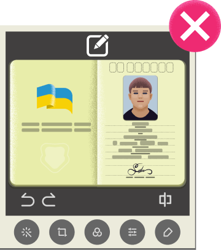
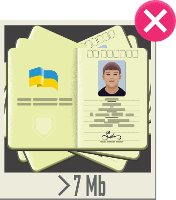
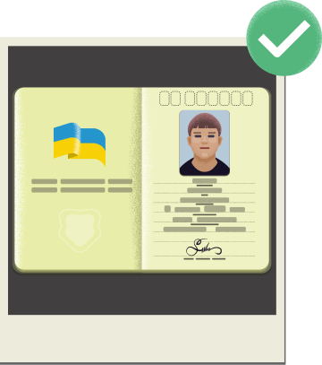
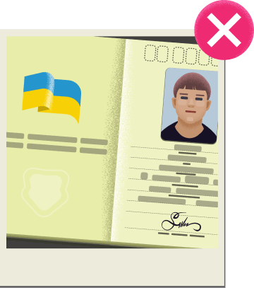
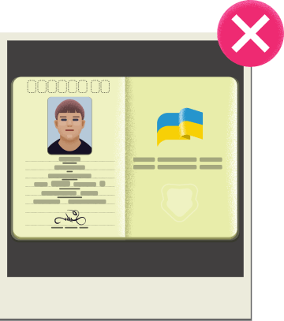

Как мне узнать что аккаунт верифицирован?
Верификация необходима для подтверждения личности владельца аккаунта и противодействию мошеническим схемам. После верификации сможешь выводить средства без дополнительного подтверждения личности.
Зайди в раздел "Баланс" личного кабинета. Активируй нужный кошелек, нажми кнопку "Вывести средства". Введи паспортные данные и отправь фото паспорта на проверку. Запрос на верификацию рассматривается после совершиния ставки в любом из сервисов сайта и внесения паспортных данных в систему.
Верификация занимает не более 72 часов. Ожидай ответ на своей электронной почте. Во время ожидания, игровой счет и баланс не блокируется. Можешь продолжать делать ставки и пользоваться другими сервисами FAVBET.
Примеры качественных и некачественных фото
- В Интернет-банке Приват24 в разделе;
- «Мои счета»/«Кредитный рейтинг»;
- На сайте ubki.ua через вход для заемщика (размещен справа на сайте);
- Через приложение «Кредитная история» для Android и iOS;
- Через приложение Privat24 («Кредитный рейтинг»)
Кредитная история – это информация обо всех Ваших кредитах и о дисциплине их погашения, которую УБКИ (Украинское бюро кредитных историй) получает от банков, страховых и
Рекомендації

Роби фото при хорошому освітленні.
- 
Не використовуй фоторедактор.
- 
Сумарний розмір вкладених файлів не має перевищувати 7 Мб.

Перед надсиланням файлів переконайся, що всі дані документа видно.
Приклади якісних та неякісних фото
- 
Копія, що відповідає вимогам.

Частина даних закрита пальцями рук.
- 
Фото зроблено з дуже близької відстані.

Зображення зроблено з занадто великої відстані.
- 
Дані паспорта відображаються у дзеркальному вигляді.